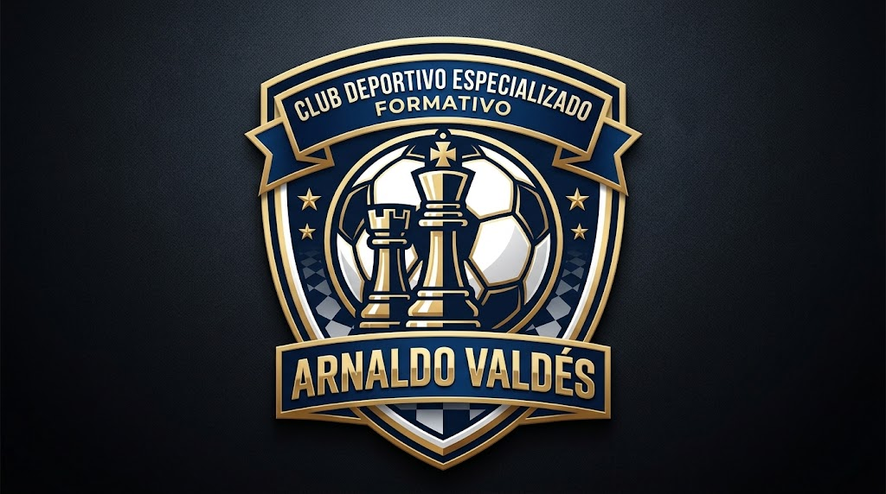
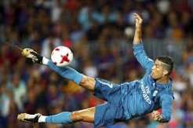
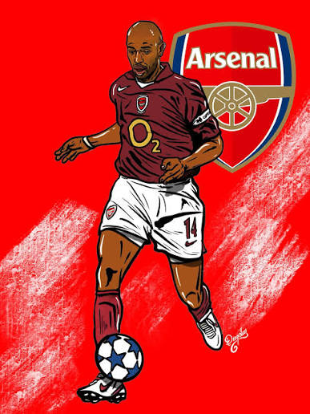

Estatutos sociales
Estatutos vigentes y sus reformas.
Documento pendienteClub Deportivo Especializado Formativo
Fútbol y ajedrez. Formación para cada jugada.
Un espacio institucional para deportistas, familias y comunidad.
Conoce el club
Club Deportivo Especializado Formativo Arnaldo Valdés.
Fútbol y ajedrez para la formación deportiva.
Deporte colectivo, técnica y juego limpio.
Estrategia, concentración y aprendizaje.



Actividad deportiva
El club fomenta fútbol y ajedrez. La información actualizada de sus programas deportivos se publicará en esta sección.
Entrenamientos y competencias.
Formación y encuentros deportivos.
Programas deportivos
Las categorías y los horarios se comunicarán por los canales institucionales del club.
Competencias
El calendario vigente se incorporará una vez que sea aprobado y comunicado por la organización.
Información institucional conforme a los requisitos de publicación.
Estatutos vigentes y sus reformas.
Documento pendienteReglamentos y documentos de aprobación.
Documentación pendienteNómina y período de funciones.
Información pendienteListado debidamente registrado.
Información pendienteCompetencias y programas deportivos.
Información por publicarCanales oficiales de la organización.
Información pendienteFútbol y ajedrez.
Disciplinas informadasInformación presupuestaria.
Información pendienteInformación de fondos autogestionados.
Información pendienteNómina institucional de deportistas.
Información por publicarNómina del personal técnico.
Información pendienteInstalaciones y ubicación.
Información pendienteMedidas para prevenir y erradicar el acoso y el abuso sexual, con atención especial a niñas, niños, adolescentes y personas de atención prioritaria.
Medidas y documentos pendientesInformación exigida por la ley y las disposiciones del ente rector del deporte.
Información pendienteLos datos y documentos se incorporarán cuando sean proporcionados y validados por el club.
Correo electrónico: pendiente de información
Teléfono y dirección: pendientes de información
Redes sociales: pendientes de información